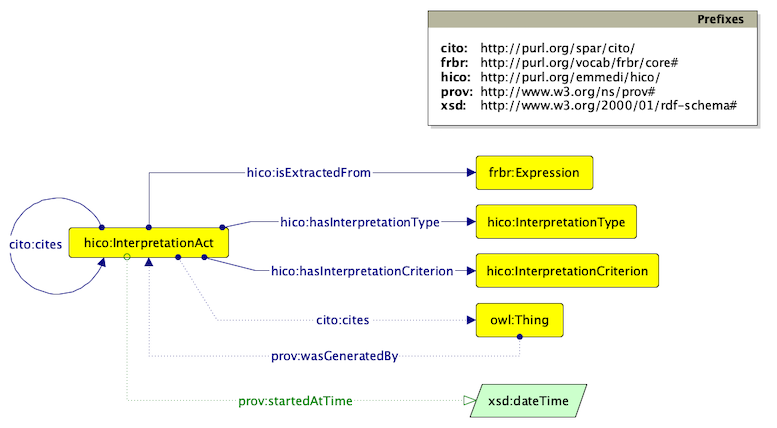

This work is distributed under a Creative Commons Attribution License (http://creativecommons.org/licenses/by/4.0/).
The Historical Context Ontology (HiCO) is an OWL 2 DL ontology developed for representing the context of a claim. In particular, it addresses features characterising hermeneutical activities performed by scholars while generating new information (i.e. an interpretation act). It allows to represent and reason on reliability of argumentations around attributions, by evaluating features such as motivations, types of cited sources or criteria, dates, relations with other claims (e.g. agreement/disagreement). Specifically, historical context regards events and situations that are part of the life-cycle of cultural heritage objects. For instance, being created by somebody, or being created at a certain time, are events related to an artefact that are claimed by an agent at a certain time, motivated with usage of primary sources, and recorded in a secondary source (e.g. a cataloguing record).
HiCO extends the PROV Ontology with terms for describing aspects of the hermeneutical activity, and reuses existing ontologies, such as CiTO Ontology for linking attributions to related sources.
The following figure shows classes (rectangles), object properties (solid lines beginning with a solid circle and ending with a solid arrow), and assertions among classes (solid lines ending with a solid arrow).

The main class of HiCO is hico:InterpretationAct. An interpretation act is a situation in which a claim about an event is linked (prov:wasGeneratedBy) to all the pieces of information necessary to validate the claim. Such information define the context of the statement, and include the following aspects:
hico:hasInterpretationType).hico:hasInterpretationCriterion).cito:citesAsEvidence, cito:agreesWith).prov:startedAtTime).hico:isExtractedFrom).cito:refutes,cito:disagreesWith).For instance, the artwork called The three Graces has been attributed to Perruzzi Baldassare by cataloguers of the Federico Zeri Foundation around 1990. Bibliographic references support the claim. A contradictory attribution ascribes the artwork to Luino Bernardino's workshop, and this is supported by a claim made by Christie's auction firm in 1994. All this information is recorded in the cataloguing record n.37495. Such a scenario can be represented as follows (in turtle syntax):
@prefix cito: <http://purl.org/spar/cito/> .
@prefix crm: <http://www.cidoc-crm.org/cidoc-crm/>.
@prefix hico: <http://purl.org/emmedi/hico/> .
@prefix prov: <http://www.w3.org/ns/prov#> .
@prefix rdf: <http://www.w3.org/1999/02/22-rdf-syntax-ns#> .
:39794-creation-1 a crm:E65_Creation ;
crm:P14_carried_out_by :baldassarre ;
prov:wasGeneratedBy :39794-authorship-attribution-1 .
:39794-creation-2 a crm:E65_Creation ;
crm:P14_carried_out_by :bernardino-school ;
prov:wasGeneratedBy :39794-authorship-attribution-2 .
:39794-authorship-attribution-1 a hico:InterpretationAct ;
hico:hasInterpretationType :authorship-attribution ;
hico:hasInterpretationCriterion :bibliography ;
cito:citesAsEvidence :book ;
prov:startedAtTime "1990-01-01T00:00:00.001Z"^^xsd:dateTime ;
hico:isExtractedFrom :37495-record ;
cito:disagreesWith :39794-authorship-attribution-2 .
:39794-authorship-attribution-2 a hico:InterpretationAct ;
hico:hasInterpretationType :authorship-attribution ;
hico:hasInterpretationCriterion :auction-attribution ;
prov:startedAtTime "1994-01-01T00:00:00.001Z"^^xsd:dateTime ;
hico:isExtractedFrom :37495-record ;
cito:disagreesWith :39794-authorship-attribution-1 .
IRI: http://purl.org/emmedi/hico/InterpretationAct
IRI: http://purl.org/emmedi/hico/InterpretationCriterion
The criterion or type of source used by an agent to support an interpretation act, such as bibliography, verbal communication, etc.
IRI: http://purl.org/emmedi/hico/InterpretationType
An arbitrary definition of the interpretation act, such as artowork attribution or date attribution.
IRI: http://purl.org/emmedi/hico/hasInterpretationCriterion
A property relating an interpretation act to a criterion or type of source used to support the claim.
IRI: http://purl.org/emmedi/hico/hasInterpretationType
A property relating an interpretation act to an individual defining an arbitrary classification of the interpretation.
IRI: http://purl.org/emmedi/hico/isExtractedFrom
A property relating an interpretation act to the source where from the claim has been extracted.
This HTML document was obtained by processing the OWL ontology source code through LODE, Live OWL Documentation Environment, developed by Silvio Peroni.
The hermeneutical activity performed by an agent in order to generate new information (e.g. an artwork attribution).